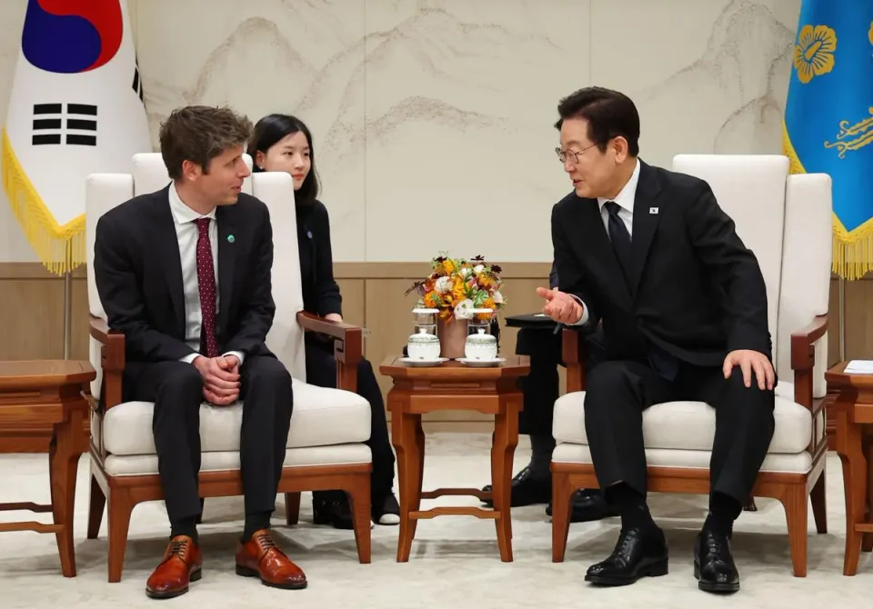

世界苦茶10月02日新闻 | 40条 | 中国海警黄岩岛升旗仪式

中国海警黄岩岛升旗仪式 | 国庆前夕反台独信号频出 | 美俄朝向中国国庆道贺 | 韩国与OpenAI达成合作 | 美国政府关门 | 教皇介入美国文化战争
苦茶数据
美元兑人民币：7.12（昨日7.12，前日7.12）
美元兑日元：147.07（昨日146.91，前日148.24）
上证指数：休市（昨日3882，前日3862）
标普500指数：6711（昨日6680，前日6661）
比特币：118850（昨日117332，前日113963）
布伦特原油：65.64（昨日65.50，前日67.64）
中国新闻
• 韩官方人士：习近平将访韩三天两夜 与特朗普李在明会谈。
韩国政府人员透露，中国国家主席习近平将访韩三天两夜，期间预计与美国总统特朗普、韩国总统李在明举行会晤。韩国主流媒体《朝鲜日报》星期二引述官方人士消息报道，习近平将出席10月31日至11月1日在韩国庆州举行的亚太经济合作组织峰会。若成行，这会是习近平2014年以来、时隔11年再度访韩，也意味着特朗普今年初重返白宫后，举世瞩目的“习特会”终于登场。韩国政府人员称，已确定习近平将在庆州逗留三天两夜，出席APEC峰会和首脑晚宴。由于中国是APEC明年的轮值主席国，预计习近平会议结束时将接过主席一职，并介绍下一届会议的举办地。不过，习近平这次是以出席APEC峰会还是国事访问为名访韩尚未确定。
• 中国海警在黄岩岛海域举行国庆升旗仪式。
中国海警在有主权争议的黄岩岛海域一艘船上，举行国庆升旗仪式。中国海警星期三在短视频平台抖音发布的视频显示，海警执法员在舷号3304的巡逻船达濠舰上列队敬礼，伴随中国国旗升起，高喊“海疆有我在，祖国请放心”的口号。据《环球时报》报道，他们是正在黄岩岛国家级自然保护区海域执行常态化管控任务的海警执法员。目前有包括达濠舰在内的多艘海警舰船，在黄岩岛国家级自然保护区执行任务。另据“南部战区”微信公众号发布的消息，9月以来，解放军南部战区组织海空兵力持续加强黄岩岛领海周边海空域巡逻警戒，进一步强化管控力度，并强调此举有效应对侵权挑衅。中国9月10日宣布在黄岩岛新设国家级自然保护区，引起菲律宾强烈抗议。
• 美俄朝向中华人民共和国76周年国庆道贺。
美国国务院恢复在10月1日中国国庆前夕发祝贺声明的惯例，9月初赴华参加中国人民抗战胜利纪念活动的朝鲜最高领导人金正恩和俄罗斯总统普京也发出贺电。美国国务院官网消息，美国国务卿鲁比奥在当地时间星期二发表声明，代表美国向中国人民表示祝贺。鲁比奥在声明中说，美国祝愿中国人民在未来一年里健康、快乐、繁荣、和平。按照惯例，美国国务院一般在中国国庆节前向北京发出祝贺。不过这个惯例去年被打破，时任国务卿的布林肯直至美国当地时间10月2日，才在官网发表简短的祝贺声明。据中国驻美大使馆网站消息，中国驻美国大使谢锋于当地时间星期一在中国国庆76周年招待会致辞时说，中美要深化利益融合，做相互成就的同行者。
• 金正恩：无论国际局势如何变化 深化朝中关系不变。
有媒体注意到，金正恩今年为国庆发给习近平的贺电，字数和内容较之去年都有增加，这反映朝中关系在九三阅兵后正在进一步拉近。广告 朝鲜国务委员会委员长金正恩10月1日当天向中国国家主席习近平致贺电，祝贺中国国庆76周年。金正恩在贺电中称，无论国际局势如何变化，持续深化朝中友好关系是朝鲜党和政府一贯坚持的立场。朝方愿同中方共同努力，推动朝中友好关系进一步深化发展，进而捍卫地区乃至世界和平与稳定。韩国韩联社分析称，金正恩每年都在中国国庆节之际向中国发去贺电。与去年相比，今年贺电的字数和内容均有所增加。
• 北京发布台湾问题文件，斥责西方 "严重违反 "全球秩序。
在纪念中华人民共和国成立周年之际，北京的立场文件确认支持1971年通过的第2758号决议 阅读时间：3分钟 为什么您可以信任南华早报6 北京在纪念中华人民共和国成立周年之际重申其对台湾的立场，并将美国和其他西方国家试图扩大台湾在国际组织中的存在描述为 "严重违反 “全球秩序。北京外交部周二在一份重申支持联合国大会第2758号决议的立场文件中，批评了华盛顿在中共政府担任中国在联合国的代表时阻挠北京加入的历史。
• 日本顶级马克思主义专家加盟中国武汉大学。
日本顶级马克思主义专家加盟中国武汉大学 Kenji Mori 被任命为这所著名大学哲学学院的全职教授 中国的一所顶级大学聘请了一位来自日本的著名马克思主义专家在其哲学学院任职。马克思主义理论是中国大学所有本科生的必修课，也是研究生入学考试的一部分。莫里是该学科的专家--他的研究领域包括马克思未发表的经济学著作，包括一个名为 MEGA2 的合作项目，该项目汇集了马克思和恩格斯的著作、手稿和通信。2024 年，世界政治经济学协会表彰了 Mori 在该领域的理论和方法论方面做出的贡献。他拥有东北大学博士学位，1989 年开始在大分大学担任讲师。他于 2003 年回到东北大学担任教授，并于 2020。
• 中国关注美俄北极解冻带来的极地战略可能性。
北极解冻：中国的极地雄心面临考验，美俄正寻求合作 随着华盛顿和莫斯科在远北地区开展资源和航运合作，北京在该地区寒冷的力量平衡中航行。例如，俄罗斯远东地区和美国西海岸之间的合作。普京没有透露细节，在普京之后在埃尔门多夫-理查德森联合基地发表讲话的特朗普也没有透露细节。但一天前，当被问及《每日电讯报》的一篇报道，即美国准备向普京提供经济奖励，包括开放阿拉斯加沿岸的自然资源时，美国总统并没有排除可能性。鉴于特朗普在乌克兰问题上对莫斯科的立场日益强硬，目前尚不清楚北极地区的任何潜在合作能走多远，但有猜测认为，北极可能是俄罗斯与美国合作抵消其对中国日益增长的依赖的一个领域。
印太新闻
• 菲律宾地震造成 69 人死亡，该省进入灾难状态。
菲律宾中部周二晚些时候发生 6.9 级强烈地震，造成 69 人死亡，数十人受伤。首当其冲的宿务省周三早些时候宣布进入灾难状态，数千人在余震不断的街头过夜。一位宿务居民告诉英国广播公司，他也在其中，并补充说电力和水供应都被切断了。他说，周围可以听到孩子们哭泣的声音，还说他们 "受到了创伤"。地震发生前一周，该国接连遭受台风袭击，造成 20 多人死亡。大多数地震遇难者来自博古，这是菲律宾中部地区米沙鄢群岛最大岛屿之一上的一个小镇，也是离震中最近的地方。从博戈传出的图片显示，街道上尸袋林立，数百人正在帐篷医院接受治疗。官员们警告说。
• 中国军方认为美军与日韩扩大演习构成威胁。
解放军评论警告称，最近几周的演习已成为破坏地区稳定的工具，中国军方的一篇评论警告称，美军与日本和韩国扩大联合网络和人工智能综合演习对地区安全构成威胁。这篇发表在周二《解放军报》上的评论—作者是解放军军事科学院的季诚—提到了最近几周举行的各种多边军事演习日益加快的步伐和复杂性。"季承写道："[演习]已经超越了传统的军事合作，正在演变成外部势力破坏地区安全动态稳定的战略工具。
• 不再潦草：印度法院要求医生改正笔迹。
在大多数人使用键盘书写的时代，笔迹真的重要吗？是的，印度法院说，如果书写者是一名医生的话。许多医生的字写得很糟糕，只有药剂师才能破译，这种笑话在印度和世界各地都很常见。但旁遮普邦和哈里亚纳邦高等法院最近下达了一项命令，强调了字迹清晰的重要性，该法院称 "清晰的医疗处方是一项基本权利"，因为它可以决定生死。法院是在一起与文字无关的案件中下达这一命令的。该案涉及一名妇女提出的强奸，欺骗和伪造指控，法官 Jasgurpreet Singh Puri 正在审理该男子的保释请求。该妇女指控该男子骗取她的钱财，许诺给她一份政府工作，对她进行虚假面试。
科技新闻
• Meta 将很快利用您与人工智能聊天机器人的对话向您推销产品。
Meta 不久将利用人们对其人工智能聊天机器人的评价，更好地向他们推销产品。该公司周三表示，用户与 Meta AI 的聊天和互动很快将被用于向他们投放更加个性化的广告。用户将在下周开始看到这一变化的通知，但要到 12 月 16 日才会生效。Meta 已经根据用户在其社交媒体平台上发布和点击的内容，以及他们与谁建立了联系，向用户投放广告。通过这些数据，Meta 可以推断出用户可能购买的商品。但是，在与 Meta 聊天机器人的对话中，用户可以直接告诉公司他们要买什么，或者他们马上要去旅行，或者他们有什么问题需要产品来解决。该公司还将利用 Meta AI 提供的数据。
• OpenAI首席执行官来台密访鸿海、台积电
业界传出，OpenAI首席执行官奥尔特曼昨日低调来台，并拜会鸿海及台积电，其中，与鸿海讨论美国AI大基建星际之门计划合作细节，并与台积电接洽自家AI芯片投片等重要议题。消息人士透露，OpenAI是特朗普政府冲刺星际之门计划的关键厂商，鸿海是星际之门计划最大AI服务器供应商，奥尔特曼这次来台拜访鸿海，主要洽谈星际之门计划的AI基建细节。星际之门计划规划在美国兴建五个新的数据中心，其中三个是与甲骨文共同建设，而甲骨文AI服务器最大供应商就是鸿海，奥尔特曼必须确保足够的AI服务器产能。至于另外两座数据中心，OpenAI将与软银合作开发，计划18个月完成。
• 韩政府与OpenAI签署协议促韩成为AI枢纽
韩国科技部周三表示，科技部与OpenAI公司签署了关于推动韩国AI生态建设的谅解备忘录。科技部借OpenAI首席执行官萨姆·奥尔特曼当天访韩之机发布了相关消息。根据谅解备忘录，科技部和OpenAI将携手推动韩国AI生态在区域间均衡发展，支持公共部门AI转型，开展AI人才培养项目，并促进国内初创企业生态活跃发展。此外，OpenAI还将支持韩国企业参与由其主导的全球AI基础设施建设项目，包括与软银、甲骨文在美开展的大型数据中心建设项目 “星际之门” 等。科技部和OpenAI将保持合作，推动韩国跻身全球AI三大强国行列，并成为亚太地区AI枢纽。
• 诺贝尔替代奖揭晓 唐凤榜上有名。
诺贝尔替代奖揭晓 唐凤榜上有名 2025年10月1日2025年诺贝尔替代奖获奖者包括大洋洲的气候保护倡议团体、缅甸和苏丹的人权活动人士。台湾前数位部长唐凤也因推动“数位民主”而获此殊荣。台湾首任数字部长唐凤是本年度的“正确生活方式奖”获奖者之一。评委称，现任台湾“网络大使”的唐凤，因其“富有开创性地运用数字科技”加强民主、赋权公民、弥合社会分裂而获奖。基金会称唐凤是一位“为公众利益而重写系统的公民黑客与技术专家”。自称“既无性别也无党派”的唐凤，是一位自学成才的IT专家，少年时就辍学创业，后投身网络公益事业，成为政府顾问。2022年，她成为首任数位发展部长，也是台湾首位跨性别部级官员。
• 荷兰科技巨头 ASML：与欧盟政界人士会面 "并非易事。
在周三于布鲁塞尔举行的《POLITICO》"竞争欧洲 "峰会上，半导体冠军企业ASML公司的一位高管抨击欧盟无法接触到欧洲的公司。当被问及该公司是否有足够的机会接触欧盟委员会主席乌苏拉-冯德莱恩等欧洲高层决策者时，ASML 全球公共事务执行副总裁弗兰克-海姆斯克说：”这并非易事。"他引用公司一位前任高管的话补充说："与一位高级官员在白宫会面比与一位委员会面要容易得多。
• 研究人员发现，人工智能尚未取代美国工人的工作。
耶鲁大学研究中心的一项新研究显示，自 2022 年推出聊天机器人以来，ChatGPT 还没有引起许多人担心的美国劳动力市场的大规模动荡。这项研究是在人们普遍担心，随着美国公司越来越多地转向人工智能，通过提高自动化程度来降低成本，作为 ChatGPT 基础技术的生成式人工智能的普及可能会危及许多工作岗位之际进行的。研究人员研究了自 ChatGPT 推出以来，工人在经济领域所有工作岗位中的分布变化。该聊天机器人以生成式人工智能技术为基础，可以根据用户的提示创建原创文本，图像和其他内容。
经济新闻
• 台行政院副院长：从未承诺也不接受台美“晶片五五分”。
台湾行政院副院长郑丽君率领谈判团到美国进行贸易磋商，星期三返台后否认接受美台生产晶片“五五分”的要求，并表示台湾不会接受这样的条件。综合《联合报》和《自由时报》报道，郑丽君星期三返抵台湾在机场接受媒体采访时澄清，谈判团“从未做出晶片五五分的承诺”，与美方的这一轮贸易磋商也没有谈到这项议题。郑丽君强调：“我们也不会答应这样的条件，请大家放心。” 她同时指谈判团此次到华盛顿是争取美国政府调降对等关税，且不叠加原有的最惠国待遇税率，以及美国《贸易扩张法》第232条文相关的关税优惠待遇等议题。郑丽君透露，谈判“有一定的进展”，双方有完整的共识之后就会进入总结会议，以达成台美贸易协议。
• 中国拟完善吹哨人制度 证券期货违法举报最高奖励增至100万人民币。
中国金融监管机构拟完善吹哨人制度，将大幅提高证券期货违法行为举报奖励，最高达100万元。分析指出，高额奖励有助于激励知情人士揭露违法行为，但制度成效的关键，仍在于营造支持与认可吹哨人的社会氛围。中国证券监督管理委员会与财政部于星期二晚间，联合发布《证券期货违法行为吹哨人奖励工作规定》，面向社会公开征求意见，截止时间为10月30日。官方说明指出，《吹哨人奖励规定》是在2014年出台、2020年修订的《证券期货违法违规行为举报工作暂行规定》基础上进一步完善。此次修订内容包括修改制度名称、完善奖励条件、较大幅度提高奖励标准、严格规范办理要求、优化奖励程序、完善保护机制及健全监督问责机制。
• 美国经济在 9 月份减少了 3.2 万个私营部门就业岗位。
由于政府停摆，政策制定者和投资者都在努力评估劳动力市场的状况，9 月份私营企业就业人数骤降，使美国经济形势更加复杂。由于政府关门，美国劳工统计局本周五不太可能公布月度就业报告。这意味着许多人在没有关键经济数据的情况下盲目飞行，不得不关注他们能得到的任何信息，包括周三薪资公司ADP提供的私营部门就业数据。报告显示，9月份美国私营部门企业减少了3.2万个工作岗位。此前预计的8月份54，000个新增就业岗位被下调至负3，000个。
• 14 亿美元的塔扎拉铁路交易使中国进入非洲铜带的快车道。
14 亿美元的塔扎拉铁路协议将中国带入通往非洲铜带的快速通道 国有企业中国土木工程集团公司将翻修并运营这条老化的坦桑尼亚-赞比亚铁路，确保通往重要航运连接线的通道畅通 在周一达成的一项协议中，中国土木工程集团公司同意首期投资 11 亿美元，另外再投资 2.38 亿美元，用于改造严重破损的塔扎拉铁路。这条全长 1，860 公里的铁路将赞比亚铜带地区与坦桑尼亚达累斯萨拉姆港连接起来，在中国和西方国家争夺非洲主要贸易走廊之际，为铜和钴的运输提供了一条通往印度洋的重要快速通道。
• 最高法院称美联储理事丽莎-库克可以留任，暂时如此。
最高法院称美联储理事丽莎-库克可以留任--暂时如此 最高法院暂时阻止了特朗普总统解雇美联储理事丽莎-库克的企图，暂时为中央银行在不受白宫政治干预的情况下做出决策的能力维持了一道重要的防火墙。这意味着库克至少可以继续留任，直到高等法院在一月份听取此案的口头辩论。这一决定表明，保守派法院至少愿意考虑对总统的权力施加一些限制，即使它允许特朗普对其他名义上独立的政府机构行使相当大的权力。批评人士曾警告说，允许特朗普解雇库克将践踏数十年来的研究成果，这些研究成果表明，当中央银行被允许在不受政客干预的情况下运作时。
俄乌战争
• 近 40% 的炼油能力关闭，俄罗斯将从亚洲进口汽油。
据媒体报道，在近40%的炼油能力关闭后，俄罗斯正准备从中国和其他亚洲国家进口汽油，以抵消日益严重的国内燃料短缺。俄罗斯炼油厂是克里姆林宫战时经济的重要组成部分，乌克兰的一系列无人机和导弹袭击严重扰乱了俄罗斯炼油厂的运营。一些设施被迫无限期停产。据该媒体报道，俄罗斯正在考虑从中国，韩国和新加坡进口燃料，以稳定国内市场。据报道，为促进进口，俄罗斯政府计划取消通过远东特定检查站进口燃料的进口关税。国家还将利用联邦预算资金补贴进口商，弥补全球市场价格与较低国内燃料价格之间的差距。俄罗斯石油公司，独立石油天然气公司和国有的 Promsyrieimport 公司将能从亚洲供应汽油。
• 七国集团中的欧盟三国在使用俄罗斯资产时寻求美国和日本的支持。
欧盟七国集团中的三巨头—德国、法国和意大利—正在敦促日本和美国使用被冻结的俄罗斯资产来帮助乌克兰，就像欧洲现在正在寻求做的那样。欧洲中央银行担心动用俄罗斯资产会损害欧元在全球的信誉--但如果华盛顿和东京等重量级国家采取类似行动，这种担忧就会消除。三位官员在周三的七国集团财长虚拟会议上表示，欧盟三方已敦促整个世界主要经济体集团在资产问题上采取一致行动。
• 芬兰总理：欧盟必须成为国防强国，而不仅仅是贸易集团。
哥本哈根--芬兰总理表示，欧盟应承担起前所未有的权力，以抵御来自俄罗斯日益增长的威胁。在周三于哥本哈根举行的集团领导人峰会之前，芬兰总理彼得里-奥尔波在接受《政治新闻》采访时说，在面对敌对国家时，欧盟必须作为一个 "真正的联盟 "采取行动。"我们需要欧盟的共同能力--因此我们需要欧盟的资助和欧盟的合作，"奥尔波说。"过去二十年来，我们在科维德、经济、移民等方面表现出了团结。现在是在安全领域展示团结的时候了。
• 法国军方逮捕疑似俄罗斯影子舰队船只上的两名船员。
巴黎--据当地检察官办公室称，法国军方周三逮捕了一艘涉嫌属于俄罗斯影子舰队的油轮上的两名船员。根据法新社拍摄的照片，法国军方人员登上了一艘悬挂贝宁国旗的油轮长滩岛号，该油轮被怀疑被俄罗斯用来绕过欧盟制裁。据当地报道，这艘油轮还被怀疑充当了上周在丹麦哥本哈根欧盟领导人峰会前出现的无人机的发射台。根据 POLITICO 查询的航运数据，"长滩岛 "号周三从波罗的海的俄罗斯普里莫尔斯克港驶出，停靠在圣纳泽尔港外 50 多公里处。
• 马克龙不喜欢欧盟的无人机墙构想。
乌苏拉-冯德莱恩提出的帮助欧洲抵御俄罗斯的无人机墙建议现在面临来自法国和德国的质疑。"我对[这类]术语持谨慎态度。法国总统埃马纽埃尔-马克龙周三在哥本哈根与欧盟领导人会晤前对记者说："事情要复杂得多。"他说："实际上，我们需要先进的预警系统来更好地预测威胁，我们需要欧洲远程火力的威慑能力，我们需要更多的地对空防御和反无人机系统。
• 监测组称，9 月份俄罗斯在乌克兰取得的领土面积急剧下降。
监测组织称俄罗斯 9 月在乌克兰的领土收获大幅下降 据乌克兰监测组织 DeepState 10 月 1 日报道，俄罗斯 9 月在乌克兰的领土推进速度明显放缓，与 8 月相比，俄军夺取的土地减少了 44%。俄罗斯军队在上个月占领了约 259 平方公里的乌克兰领土，仅占乌克兰总面积的 0.04%。这是自 5 月份以来的最小月度收获。目前，俄罗斯总共占领了乌克兰约 19.04% 的领土。乌克兰 9 月份最重大的损失发生在顿涅茨克州新帕夫利夫卡村附近。DeepState 的分析师将该地区描述为前线最具挑战性的地段之一。在哈尔科夫州靠近乌克兰-俄罗斯边境的库皮安斯克镇附近，激烈的战斗也在继续。
世界新闻
• 匈牙利要求解除对 5.5 亿欧元的封锁，但遭到欧盟委员会拒绝，因为双方关系恶化。
随着布鲁塞尔与布达佩斯之间的紧张关系再次升级，欧盟委员会部分拒绝了匈牙利提出的解冻 5.45 亿欧元欧盟资金的计划。在这笔资金中，匈牙利将只收到 1.635 亿欧元的预付款--如果被认为使用不当，欧盟委员会甚至可以收回这笔预付款。匈牙利右翼总理维克托-欧尔班威胁要破坏对俄罗斯能源的更严厉制裁，并阻止乌克兰加入欧盟的申请和欧盟向这个饱受战争蹂躏的国家提供的 1,400 亿欧元贷款，这令各国政府对他越来越失望。
• 凯米-巴德诺克承诺废除英国气候法。
凯米-巴德诺克领导的保守党承诺，如果他们重新执政，将放弃英国最重要的气候法案，这是该党坚决放弃净零承诺的最新信号。2008 年，时任能源大臣埃德-米利班德在工党上届执政期间通过了《气候变化法》。该法案得到了历届保守党政府的支持，前首相特雷莎-梅甚至在 2019 年对其进行了强化，使英国 2050 年的净零排放目标具有法律约束力。然而，保守党领袖凯米-巴德诺克已承诺废除该法，指责该法推高了能源账单，并造成了官僚主义拖延。
• 珍-古道尔夫人去世，享年 91 岁。
保护主义者珍-古道尔夫人是世界领先的黑猩猩专家，她去世时享年 91 岁。她的观察帮助揭示了人类与黑猩猩的密切关系。她还为世界各地的保护项目不懈努力。珍-古道尔研究所发表声明说，古道尔博士是在美国加利福尼亚州巡回演讲时自然死亡的。声明说，她的发现 "彻底改变了科学"，她是 "保护和恢复我们自然世界的不懈倡导者"。联合国对古道尔博士的逝世表示哀悼，称她 "为我们的星球及其所有居民不懈努力，为人类和大自然留下了非凡的遗产"。绿色和平组织说，对她的去世感到 "心碎"。
• 塔利班封锁互联网后，阿富汗人因互联网恢复而欢欣鼓舞。
阿富汗人走上街头，为互联网和电信服务恢复而欢欣鼓舞，这引起了广泛的谴责。当地记者称通信正在恢复，而互联网监测机构 Netblocks 称网络数据显示连接 "部分恢复"。一位与政府关系密切的消息人士向 BBC 阿富汗频道证实，塔利班总理下令恢复互联网。长达 48 小时的停电扰乱了商业和航班，限制了对紧急服务的访问，并引发了对妇女和女童进一步被孤立的担忧，因为自 2021 年强硬派伊斯兰组织重新掌权以来，她们的权利一直受到严重侵蚀。周三晚上，数百名阿富汗人在首都喀布尔走上街头。
• 特朗普称气候变暖是 "骗局"，教皇利奥斥责气候怀疑论者。
教皇利奥十四世周三谴责那些否认气候变化的人，认为他们正在助长对上帝造物的破坏。"利奥说："有些人选择嘲弄日益明显的气候变化科学，嘲笑那些谈论全球变暖的人，甚至把对穷人影响最大的事情归咎于穷人。就在教皇发表上述言论一周前，美国总统唐纳德-特朗普在联合国发表讲话，称气候变化是 "有史以来对世界实施的最大骗局"。本周二，利奥直接进入美国政坛，为芝加哥大主教管区向支持堕胎权的伊利诺伊州民主党参议员迪克-德宾致敬的决定辩护。
• 勒庞政党在马克龙盟友的协助下获得法国议会最高职位。
玛丽娜-勒庞领导的极右翼政党国民联盟周三在法国总统埃马纽埃尔-马克龙部队的帮助下赢得了法国议会的两个重要职位。国民公会议员塞巴斯蒂安-谢努和埃莱娜-拉波特将担任法国权力更大的议会下院—国民议会的副议长。两人曾在2022年至2024年期间担任过这些领导职务，包括制定国民议会议程、更新内部规则手册和制裁议员。
• 数百名名人重启麦卡锡时代的委员会，捍卫言论自由。
本周三，550 多名名人重新发起了一个在二战后红色恐慌时期首次组织起来的团体：第一修正案委员会。他们的目的是站出来捍卫所谓的 "宪法权利"："联邦政府再次开展协调行动，让政府，媒体，司法部门，学术界和娱乐界的批评者保持沉默。该委员会成立于 20 世纪 40 年代，目的是反对臭名昭著的 "众议院非美活动委员会"，联邦政府通过该委员会指控许多顶级艺人是共产主义者或共产主义同情者，并断送了他们的事业。新近重新组建的委员会的其他成员包括电影制片人斯派克-李，巴里-詹金斯，J.J.另一位签名者是演员弗兰-德烈夏。
• 特朗普签署行政命令，誓言在以色列发动袭击后保卫卡塔尔。
在以色列发动袭击后，特朗普签署行政命令誓言保卫卡塔尔 阿拉伯联合酋长国迪拜--美国总统唐纳德-特朗普签署了一项行政命令，誓言将采取包括美国军事行动在内的一切措施保卫能源丰富的卡塔尔--尽管目前尚不清楚这一誓言的份量。白宫网站周三公布了这一命令的文本，但日期是周一，这似乎是在以色列对卡塔尔发动突然袭击后，特朗普向卡塔尔人保证的另一项措施，袭击的目标是哈马斯领导人，当时他们正在权衡是否接受就加沙地带战争与以色列停火。据一位未经授权公开发表匿名讲话的白宫官员称。
• 美国笔会警告 "系统性地从学校图书馆移除 "的图书数量增加。
美国笔会警告 "系统性地从学校图书馆移除 "的图书数量增加 美国笔会周三公布了 2024-2025 学年被禁书最多的图书名单--并警告说，在过去两年中，全国公立学校学区受到质疑或被禁的图书数量成倍增加。这个致力于自由表达的组织统计了上一学年的6870项禁令。虽然这一数字低于2023-24学年的10046起禁书事件，但与2021-2023学年的平均每年不到3000起禁书事件相比，仍有大幅上升，该组织将此称为公立学校 "令人不安的审查常态化"。
• 冯德莱恩的联盟伙伴就简化谈判发生冲突。
欧洲议会中的政治团体周二未能就一项简化法案达成共同立场，这暴露了欧盟委员会主席乌苏拉-冯德莱恩的中间派联盟中的分歧。作为首个 "总括 "简化方案的一部分，立法者们准备了一个通宵，以就在多大程度上削减几项欧盟绿色法律达成协议。但由于保守党、自由党和社会党之间的关系破裂，会议不到四个小时就结束了。中右翼的欧洲人民党威胁说，除非其传统联盟伙伴--中间派的复兴党和中左翼的社会党与民主党进步联盟--同意一个削减幅度较小的替代方案，否则该党将站在右翼团体一边，通过对规则的大规模削减。复兴党似乎愿意接受第二种方案，但附带一些条件，而社民党和民主进步联盟则拒绝接受。
• 教皇介入美国堕胎辩论，提出支持生命的真正含义。
教皇介入美国堕胎争论，提出 "支持生命 "的真正含义 教皇介入美国堕胎争论，提出 "支持生命 "的真正含义 罗马--教皇利奥十四世首次介入搅动美国天主教会的堕胎争论，提出了 "支持生命 "的真正含义这一看似矛盾的问题。利奥是芝加哥人，他在周二晚些时候被问及芝加哥红衣主教布拉斯-库比奇计划向伊利诺伊州参议员迪克-德宾颁发终身成就奖以表彰他在帮助移民方面所做的工作。鉴于这位有权势的民主党参议员支持堕胎权，该计划引起了一些保守派美国主教的反对。利奥首先呼吁尊重双方，但他也指出了这种辩论中似乎存在的矛盾。"利奥说："有人说'我反对堕胎，但又说我赞成死刑'。
• 担心炸弹威胁 慕尼黑啤酒节推迟后重新开放。
2025年10月1日慕尼黑今天凌晨发生一起爆炸事件，该市啤酒节当日直到17点30分才恢复开放。广告 因炸弹威胁而关闭的慕尼黑啤酒节周三下午5:30重新开放。慕尼黑市长在Instagram上表示，警方已通知他，继续举办啤酒节是安全的，因此将重新开放。当日上午，由于可能的炸弹威胁，慕尼黑啤酒节宣布至少暂时关闭至下午五点。警方称，起因是今天凌晨慕尼黑北部一栋房屋起火，并伴有巨响，警方在屋内发现了爆炸装置，并在附近的一个湖边发现了一名垂死的人，这名伤者此后不久死亡。警方还发现了图中下方这辆完全烧毁的货车。
• 在国防部长滔滔不绝的时候，数百名美国将军努力保持严肃。
本文刊发在大西洋月刊，作者是南希·A·优素福和米西·瑞安。在赫格塞斯走上讲台，向被召集到华盛顿特区郊外参加神秘会议的数百名将军和海军上将发表讲话前的几天，五角大楼的官员开玩笑说，国防部长完全可以发封邮件，省时省钱。事实证明，赫格塞斯在匡提科海军陆战队基地发表的讲话，几乎可以看作是他2024年《对战士的战争》一书的拷贝。这本书全面批判了他在2021年以国民警卫队少校军衔离开的美国军队。为了这场讲话，他把全球各地的指挥官召集到华盛顿，耗费大量纳税人资金，标志着这位前福克斯新闻主持人试图按自己形象打造美国军队，与“让美国再次伟大”议程更紧密对齐的行动进入新阶段。他在书中批评的所有问题——多元化倡议。
• 特朗普冻结对纽约市的 180 亿美元拨款，这里是民主党主要领导人的故乡。
在联邦政府停摆的第一天，特朗普政府向参议院少数党领袖查克-舒默参议员和众议院少数党领袖哈基姆-杰弗里斯的所在地纽约市发射了一枚财政炮弹，冻结了国会预算中的 180 亿美元基础设施资金。舒默和杰弗里斯是民主党在与白宫的预算争端中的关键人物。"联邦管理和预算办公室负责人拉塞尔-沃特在X网站上发文称："纽约市约180亿美元的基础设施项目已被搁置，以确保资金不会根据违宪的DEI原则流动。